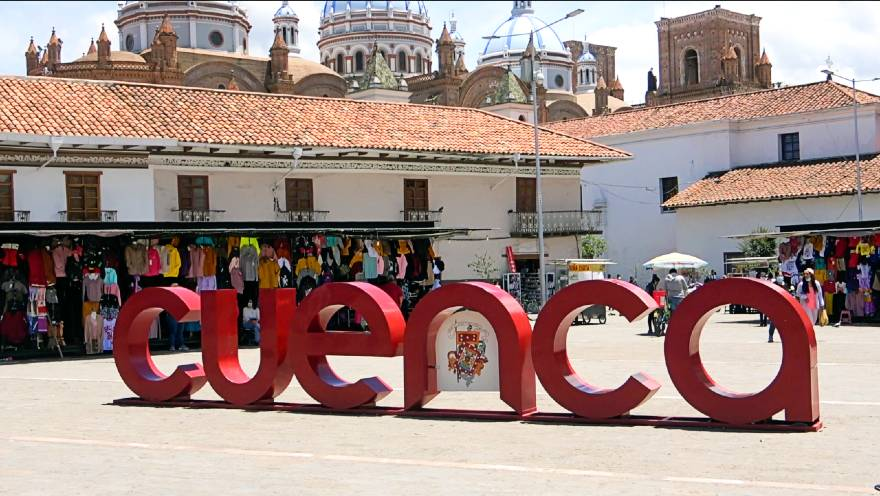
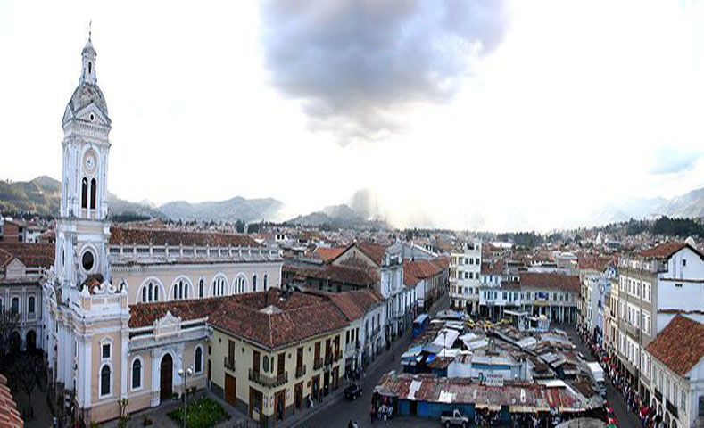
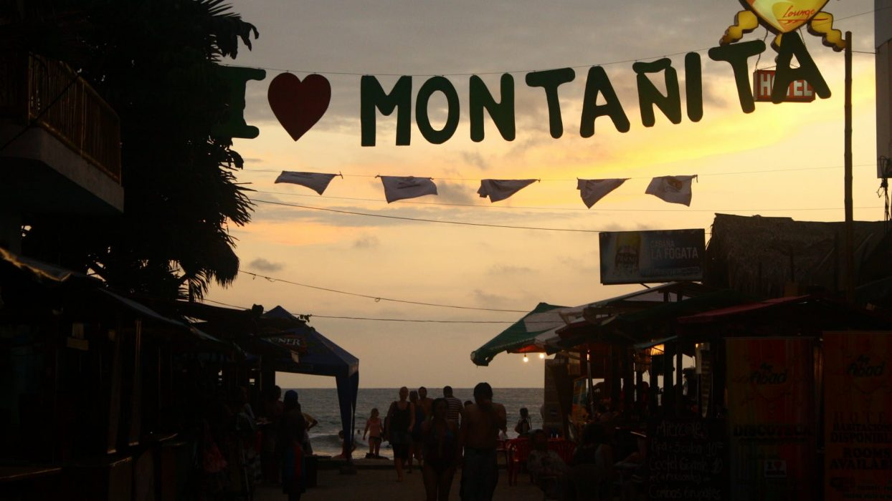
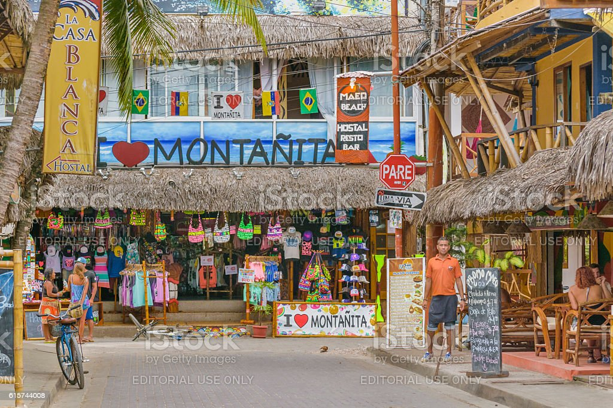

Cuenca
Información
Cuenca, Ecuador, es considerada una ciudad hermosa por varias razones:
- Arquitectura colonial: Cuenca es conocida por su impresionante arquitectura colonial española. El centro histórico de la ciudad ha sido declarado Patrimonio de la Humanidad por la UNESCO, y cuenta con calles empedradas, hermosas plazas y edificios coloniales bien conservados. La Catedral de la Inmaculada Concepción, la Iglesia de San Francisco y el Parque Calderón son solo algunos ejemplos de la impresionante arquitectura que se puede encontrar en Cuenca.
- Paisajes naturales: La ciudad de Cuenca está rodeada de impresionantes paisajes naturales. En los alrededores, se encuentran las montañas de los Andes, ríos serpenteantes y hermosos valles. Además, cerca de Cuenca se encuentra el Parque Nacional Cajas, que cuenta con una gran diversidad de flora y fauna, así como hermosos lagos y senderos para explorar.
- Cultura y tradiciones: Cuenca es una ciudad rica en cultura y tradiciones. La ciudad tiene una larga historia y ha conservado muchas de sus tradiciones y festividades. Durante el año, se celebran numerosos eventos culturales, como el Festival de la Independencia de Cuenca y la Semana Santa, que atraen a visitantes de todo el mundo. Además, la artesanía tradicional de Cuenca, como la cerámica y los sombreros de paja toquilla, es reconocida internacionalmente.
- Gastronomía: Cuenca ofrece una deliciosa gastronomía. Los platos típicos de la región, como el cuy asado (conejillo de Indias), la fanesca (una sopa de granos y pescado), el hornado (carne de cerdo asada) y el mote pillo (maíz tierno cocinado con huevos y cebolla), son sabrosos y representativos de la cultura culinaria local.
- Hospitalidad y calidad de vida: Los habitantes de Cuenca son conocidos por su calidez y amabilidad. La ciudad ha sido reconocida internacionalmente como uno de los mejores lugares para vivir en América Latina debido a su alta calidad de vida, servicios de salud de calidad y seguridad.
Imágenes
 Reserva
Montañita
Información
Montañita, en Ecuador, es considerada un lugar bonito por varias razones:
- Playas impresionantes: Montañita se encuentra en la costa de Ecuador y cuenta con hermosas playas de arena dorada y aguas cristalinas. Sus playas son conocidas por ser ideales para practicar surf debido a las olas consistentes y de calidad que atraen a surfistas de todo el mundo. Además, el entorno natural de las playas es encantador, con palmeras, acantilados y una vibrante vida marina.
- Ambiente relajado y festivo: Montañita es famosa por su ambiente relajado y su espíritu festivo. Es un destino popular entre los jóvenes y los viajeros que buscan disfrutar de una vida nocturna animada y fiestas en la playa. La ciudad cuenta con una gran cantidad de bares, discotecas y restaurantes que ofrecen una amplia variedad de opciones para divertirse y disfrutar de la música y la cultura local.
- Surf y deportes acuáticos: Montañita es conocida como uno de los mejores lugares para practicar surf en Ecuador. Las olas consistentes y de calidad atraen a surfistas de todos los niveles, desde principiantes hasta expertos. Además del surf, se pueden realizar otros deportes acuáticos como bodyboarding, kitesurfing y paddleboarding, lo que convierte a Montañita en un paraíso para los amantes de los deportes acuáticos.
- Gastronomía y vida nocturna: Montañita ofrece una amplia variedad de opciones gastronómicas. Hay numerosos restaurantes que sirven platos locales e internacionales, con énfasis en mariscos frescos y cocina ecuatoriana. Además, la vida nocturna en Montañita es vibrante, con bares y clubes que ofrecen música en vivo, DJ y fiestas temáticas. Es un lugar ideal para los amantes de la música, la diversión y la vida nocturna.
- Comunidad internacional: Montañita es un lugar que atrae a viajeros y expatriados de todo el mundo. La diversidad cultural y la mezcla de nacionalidades crean un ambiente único y multicultural en la ciudad. Esta comunidad internacional contribuye a la energía y la diversidad cultural de Montañita, lo que lo convierte en un lugar interesante y emocionante para visitar.
Imágenes
 Reserva
Misahualli
Información
Misahuallí, en Ecuador, es considerado un lugar bonito por varias razones:
- Ubicación y entorno natural: Misahuallí se encuentra en la provincia de Napo, en plena selva amazónica ecuatoriana. Su ubicación privilegiada le brinda un entorno natural impresionante, rodeado de exuberante vegetación, ríos cristalinos y una gran biodiversidad. La belleza de la selva amazónica y la oportunidad de explorarla hacen de Misahuallí un lugar atractivo para los amantes de la naturaleza.
- Vida silvestre y avistamiento de animales: Misahuallí es famoso por su rica vida silvestre y la posibilidad de avistar una variedad de especies. Puedes tener la oportunidad de observar monos, aves exóticas, caimanes y otros animales autóctonos en su hábitat natural. Los paseos en bote por el río y las caminatas por la selva ofrecen experiencias únicas para conectarse con la naturaleza y descubrir la fauna y flora de la región.
- Cultura indígena y tradiciones: En Misahuallí, se encuentran comunidades indígenas que han mantenido sus tradiciones y cultura ancestral. Tendrás la oportunidad de interactuar con estas comunidades y aprender sobre sus costumbres, creencias y artesanías. La riqueza cultural de la región se manifiesta en sus festividades, danzas tradicionales y música autóctona.
- Actividades al aire libre: Misahuallí ofrece una amplia gama de actividades al aire libre para disfrutar de la naturaleza. Puedes realizar caminatas por la selva, paseos en canoa por los ríos, hacer tubing (descenso en río en una especie de flotador) o incluso disfrutar de emocionantes aventuras como la tirolina y el rappel. Estas actividades permiten explorar la belleza natural de la región de manera activa y emocionante.
- Paz y tranquilidad: Misahuallí es un lugar donde puedes escapar del bullicio de la ciudad y sumergirte en la paz y tranquilidad de la selva. La conexión con la naturaleza y el ambiente relajado hacen de Misahuallí un destino ideal para aquellos que buscan desconectarse, relajarse y rejuvenecer en un entorno natural único.